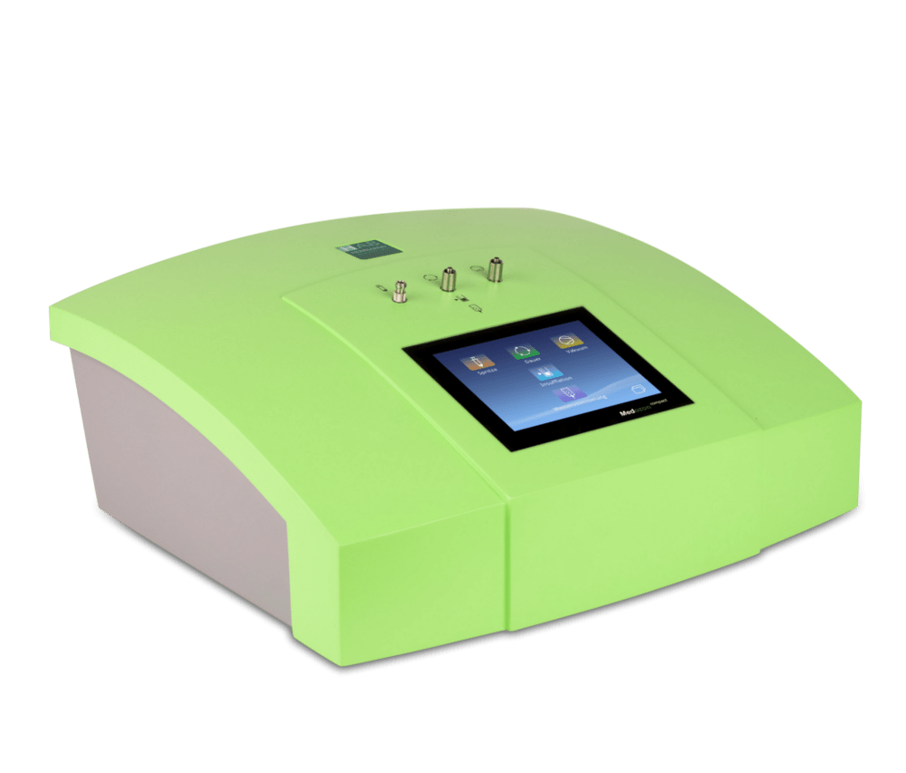
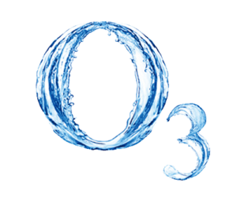

Ozonoterapija
 
Kas ir ozons?
Ozons ir skābeklis izmainītā veidā - viena ozona molekula satur trīs skābekļa atomus. Ozonam ir ļoti izteikts oksidēšanās efekts, tādēļ to klasificē kā aktīvo skābekli. Ozons ir atmosfēras dabīgā sastāvdaļa.Kā var iegūt ozonu?
Ar ģeneratora palīdzību tiek iegūta augsta elektriskā izlāde, kas, saskaroties ar tīro skābekli, veido ozonu. V.Siemens pirmo reizi šo metodi pielietoja 1857. gadā. Šī ozona iegūšanas metode ir saglabājusies līdz mūsdienām. Pēdējā laika ir palielinājusies interese par nemedikamentozām ārstniecības metodēm, kas var samazināt nepieciešamību lietot dažādus preparātus un vienlaicīgi iedarboties uz saslimšanas procesu. Ozonoterapija ir ārstnieciska metode, kas pēdējo gadu laika ir guvusi plašu pielietojumu klīniskajā praksē. Ozonam piemīt daudzveidīgi terapeitiskie efekti, - antibakteriālais, pretvīrusu, pretiekaisuma un imunomodulējošais. Tas uzlabo mikrocirkulāciju, piedalās tauku oksiģenācijā un palielina organisma aizsargspējas. Šīs īpašības dod iespēju ārstēt vesalu virkni slimību. Pirmo reizi ozonu, kā antiseptisku līdzkli, pielietoja Pirmā pasaules kara laikā 1915. gadā.Kā ozons ietekmē cilvēka organismu?
Tas palīdz aknām neitralizēt toksiskas vielas, sadala taukvielas (holesterīnu un triglicerīdus), kuras nelabvēlīgi ietekmē asinsvadus (miakarda infarkts, insults). Ozons uzlabo vielmaiņas procesus šūnās, kā āri palielina tajās iegūstamo enerģijas daudzumu. Pazemina urīnskābes līmeni, uzlabo asinsriti, likvidē visu veidu baktērijas, vīrusus un sēnītes! Indikācijas - stomatoloģija - paradontīta ārstēšana, visu locītavu artrozes, vīrusu vai alkohola nodarītos aknu bojājumus, asinsrites traucējumus, insulta ārstēšana, reimatiskas saslimšanas, paaugstinātu taukvielu daudzumu asinīs, onkoloģisko saslimšanu palīgterapija, smagu un ilgstošu saslimšanu seku likvidācija, visu acu slimību profilakse, kas saistītas ar asinsrites traucējumiem, migrēnas, vispārēju nespēku, alerģiskas un strutojošas ādas slimības, furunkulozi, bronhiālo astmu, psoriāzes, zarnu gļotādas iekaisumus, aknu saslimšanas. Blakusparādības nav novērotas.
Ozonterapiju veiksmīgi izmanto gan ASV, gan Rietumeiropā, Ķīnā, Krievijā.
Mūsu klīnikā piedāvājam veikt šo procedūru ar Vācijā ražotu aparatūru ”HERRMANN”, kā arī esam ši ražotāja oficiālais pārstāvis.
Klīnikas vadītāja Dr. V. Pobegusa pirmā apstiprinājusi medicīnisko tehnoloģiju GINGIVĪTA, PARODONTĪTA UN PARADONTOZES OZONTERAPIJA” Nacionālaja Veselības dienestā Latvijā.
Ozonterapijas pielietošana kompleksajā parodonta iekaisuma slimību terapijā tiek panākts ozona pretiekaisuma un oksidēšanās efekts, kas nodrošina antibakteriālu iedarbību, kas nepieciešama ārstēšanas un profilakses procesā. Ir pierādīts, ka mutes dobuma skalošana ar ozonētu destilētu ūdeni vai fizioloģisko šķīdumu profesionālās higiēnas procedūras laikā uzlabo mutes dobuma higiēniskos rādītājus pateicoties efektīvai iedarbībai uz zobu mīkstā aplikuma mikrofloru, tādā veidā aizkavējot kariesa un parodonta slimību attīstību. Ozonēto šķīdumu lietošana samazina mīkstā zobu aplikuma daudzumu, veicina gļotu šķīšanu. Ozonterapijas rezultātā samazinās parodonta higiēniskais indekss. Organisma aizsargspēju un atveseļošanās procesa paātrināšanai, kā arī smagos paradonta iekaisuma slimību gadījumos ieteicama parenterāla ozonēta fizioloģiska šķīduma ievade.
Lokāla ozonēta destilēta ūdens , fiziploģiskā šķīduma un ozonētas eļļas lietošana terapijā pacientiem ar gingivītu un hronisku ģeneralizētu parodontītu dažādāš pakāpēs ir augstu efektīva. Interese par nemedikamentozām terapijas metodēm, pie kuras pieskaitāma arī ozonoterapija, ir palielinājusies vairāku faktoru ietekmē. Pirmkārt, saistībā ar alerģisku reakciju pieaugumu, otrkārt, palielinās antibiotiku rezistento baktēriju skaits, kas ierobežo terapijas iespējas! Plaša ozona izmantošana profilaktiskos un ārstnieciskos nolūkos, tā augstā klīniskā efektivitāte, laba panesamība, relatīvi nelielās izmaksas – sekmē zonterapijas izmantošanu kombinācijā ar citām ārstēšanas metodēm.